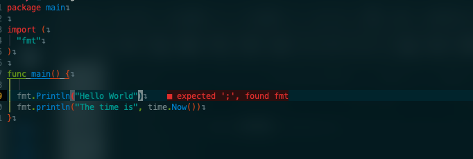

NeovimでGoの環境構築を行ったので、メモとして置いておきます.
環境構築
Pluginのinstall
まずはこのPluginを入れましょう
(私はPluginManagerにPackerを使用しています)
use 'hrsh7th/cmp-buffer' -- nvim-cmp source for buffer words
use 'hrsh7th/cmp-nvim-lsp' -- nvim-cmp source for neovim's built-in LSP
use 'hrsh7th/nvim-cmp' --Completion
use 'neovim/nvim-lspconfig'
use 'williamboman/mason.nvim'
use 'williamboman/mason-lspconfig.nvim'
別途LSPについてはこちらの記事を見るといいと思います.
Pluginが入れ終わったら以下を行う
- まず、mason.rc.luaというファイルを作成し以下を記述
local status, mason = pcall(require, "mason") if (not status) then return end local status2, lspconfig = pcall(require, "mason-lspconfig") if (not status2) then return end mason.setup({ }) lspconfig.setup( lspconfig.setup { ensure_installed = { 'gopls' } } ) - その後、
:Masonと打つことでgoplsがインストールされる - lspconfig.rc.luaと言うファイルを作成し以下を記述
local status, nvim_lsp = pcall(require, 'lspconfig') if (not status) then return end local on_attach = function(client, buffer) --formatting if client.server_capabilities.documentFormattingProvider then vim.api.nvim_command [[augroup Format]] vim.api.nvim_command [[autocmd! * <buffer>]] vim.api.nvim_command [[autocmd BufWritePre <buffer> lua vim.lsp.buf.format()]] vim.api.nvim_command [[augroup END]] end end -- Go nvim_lsp.gopls.setup { on_attach = on_attach filetypes = { "go", "gomod", "go.mod" } }
こうすることでGoの環境が作れると思います
使用例

このようにエラー等が表示されていればOKです.